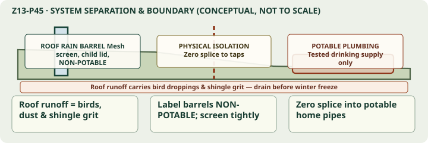

Z13-P45 · Home survival and utilities · New manuscript
Keep household rainwater catchment strictly isolated from potable taps
Use roof rain barrels safely for gardening or non-potable flushing while preventing roof-runoff microbes and shingle chemicals from entering drinking supplies.
When it applies · Homes and homesteads collecting roof rainwater in barrels or cisterns.
Equipment · Mosquito-screened opaque rain barrels, clearly stenciled NON-POTABLE labels, and complete physical separation from house plumbing.

Actions
- Treat residential roof rainwater collected from asphalt shingles, metal flashing, gutters, and bird-visited roofs strictly as NON-POTABLE water suitable for ornamental watering or emergency toilet flushing—NOT drinking without validated multi-barrier treatment and contaminant screening.[W03, W30]
- Cover rain barrels tightly with fine mosquito mesh and solid child-safe lids (preventing drowning hazards and mosquito breeding), label barrels boldly NON-POTABLE, and disconnect/drain barrels before Upper Midwest autumn freezes split plastic tanks.[W03, W30, U10]
- Never splice a rain-barrel pump into household drinking pipes; any dedicated potable rainwater system requires engineered roof materials, first-flush filtration, disinfection, lab testing, and local health-code approval.[W03, U08]
Failure recognition · Drinking untreated rainwater straight from a green sunlit gutter barrel containing bird droppings and asphalt shingle grit.[W03, W30]
Verify · Confirm barrels have mosquito mesh, child-safe lids, bold NON-POTABLE labels, zero pipe cross-connections, and winter draindown.[W03, W30]
Stop or change course · Chemical roof treatments (moss killers), wildfire ash on roofs, or stagnant foul odor prohibit even vegetable-leaf splash watering.[W03, W01, P03]
Evidence and editorial notes
- P03 · University of Minnesota Extension · Planting the Vegetable Garden (current web edition)
- Section: Watering, Mulching, Crop Rotation, and Integrated Pest Management · Conditions: Home vegetable plots across seasonal dry/wet swings
Support: Water deeply at the soil base rather than overhead foliage to conserve moisture and curb fungal disease, mulch soil to stabilize temperature and weeds, rotate plant families across seasons, and identify pests before choosing least-toxic controls.
Limitations: Untreated rainwater or suspect surface water should not be splashed onto ready-to-eat leafy crops immediately before harvest. · Conflicting evidence: None; aligns with FSG-4 clean produce handling.
Editorial note: Grounds resilient low-input gardening and biological pest management. · Specialist reviewer: Extension horticulture and integrated pest management
Primary source · checked 2026-11-24 - U08 · FEMA / Ready.gov · Water Storage and Emergency Supply (current web edition)
- Section: Water > Emergency Household Supply, Shutoff, and Alternate Indoor Sources · Conditions: Household plumbing disruptions, water-main breaks, or winter freeze outages
Support: Store at least 1 gallon per person per day for several days (two weeks where feasible for extended outages), know the main water shutoff valve location, and recognize clean indoor water-heater reserve boundaries only after shutting off power/gas and confirming supply safety.
Limitations: Never use water from radiators, hot-water boilers, or chemically treated toilet tanks for drinking. · Conflicting evidence: None; complements CDC-S (W06, W14).
Editorial note: Covers household water shutoffs, pipe-freeze prevention, and safe indoor reserves. · Specialist reviewer: Plumbing safety and drinking-water public health
Primary source · checked 2026-11-24 - U10 · FEMA / Ready.gov · Winter Weather (current web edition)
- Section: Winter Household Resilience > Frozen Pipes, Ice Dams, and Heating Loss · Conditions: Sub-zero Upper Midwest winter outages and prolonged cold snaps
Support: Prevent burst pipes by insulating exposed lines, keeping cabinet doors open, shutting off and draining water lines per plumbing guidance if indoor temperatures drop toward freezing, and consolidating household occupants into one safe insulated interior room.
Limitations: Draining hydronic boilers or gas water heaters requires exact manufacturer/plumber steps to prevent equipment damage or gas leaks. · Conflicting evidence: None; regionalizes winter home defense for Minnesota conditions.
Editorial note: Anchors winter pipe protection, thermal-zone consolidation, and abandonment thresholds. · Specialist reviewer: Residential plumbing, HVAC, and cold-weather emergency management
Primary source · checked 2026-11-24 - W01 · CDC · How to Make Water Safe in an Emergency (2024-09-19)
- Section: Water with fuel or toxic chemicals in it · Conditions: Suspected fuel, toxic chemicals or radioactive contamination
Support: Use a different safe supply. Standard boiling and microbial disinfection do not make this water safe.
Limitations: Does not list contaminant-specific lab remediation; applies to emergency consumer decisions only. · Conflicting evidence: None across CDC/EPA emergency guidance.
Editorial note: Used as upstream hard-stop gate prior to any field treatment card. · Specialist reviewer: Drinking-water safety and public health
Primary source · checked 2026-11-24 - W03 · CDC · Collecting Rainwater and Your Health (current web edition)
- Section: Rainwater might not be safe for household use · Conditions: Collected rain, including apparently clean runoff
Support: Germs and chemicals can enter from air, roof, gutters or storage. Prefer safe drinking water for ingestion.
Limitations: Site-specific roof and atmospheric chemistry vary; no universal roof-wash formula assumed. · Conflicting evidence: None; aligns with CDC potable-first hierarchy.
Editorial note: Separates catchment from raw storage and microbial treatment. · Specialist reviewer: Drinking-water safety and environmental health
Primary source · checked 2026-11-24 - W30 · CDC · Collecting Rainwater and Your Health (current web edition)
- Section: Collecting Rainwater > First-Flush, Debris, and Storage Hygiene · Conditions: Improvised or dedicated rainwater catchment systems
Support: Bird droppings, windblown dust, leaf tannins, and surface coatings enter initial runoff; isolate collection surfaces, screen coarse debris on the raw side, and treat before drinking.
Limitations: Even screened rain catchment remains raw water until validated microbial treatment is applied. · Conflicting evidence: None; prevents treating screened rain as potable.
Editorial note: Supports catchment geometry, leaf/branch runoff limits, and first-flush separation. · Specialist reviewer: Drinking-water safety and environmental health
Primary source · checked 2026-11-24
Source lineage · CDC Collecting Rainwater and EPA Private Wells; new manuscript · Classification · New manuscript.